01
Rama, Sita & Lakshmana
Rama, Sita, dan Lakshmana menjalani kehidupan di hutan setelah meninggalkan kehidupan kerajaan.
Balinese Cultural Heritage
BALINESE TRADITIONAL PERFORMANCE
A traditional Balinese performance that brings the story of the Ramayana to life through movement, expression, and the iconic sound of “cak”.
Explore More Below! ⬇Get to Know
Tari Kecak adalah salah satu seni pertunjukan tradisional yang berasal dari Bali. Tari ini menggabungkan unsur tari, drama, musik vokal, dan cerita yang diambil dari epos Ramayana.
Ciri khas Tari Kecak adalah sekelompok penari laki-laki yang duduk membentuk lingkaran sambil mengucapkan suara “cak, cak, cak” secara berirama.

Tari Kecak berasal dari Bali dan menjadi salah satu bentuk seni pertunjukan yang dikenal melalui gerakan, ekspresi, cerita Ramayana, dan suara “cak, cak, cak”.
The Story
Tari Kecak umumnya membawakan kisah Ramayana, terutama perjuangan Rama untuk menyelamatkan Sita dari Rahwana.
Rama, Sita, dan Lakshmana menjalani kehidupan di hutan setelah meninggalkan kehidupan kerajaan.
Rahwana menculik Sita dan membawanya ke kerajaan Alengka. Peristiwa ini menjadi awal perjuangan Rama.
Rama dan Lakshmana mencari Sita. Dalam perjalanan mereka mendapat bantuan dari kaum Wanara.
Hanoman pergi ke Alengka untuk mencari Sita dan menyampaikan pesan dari Rama.
Hanoman menemukan Sita dan memberitahukan bahwa Rama sedang berusaha menyelamatkannya.
Rama bersama pasukan wanara menghadapi Rahwana. Pada akhirnya Rama berhasil mengalahkan Rahwana.
Symbolism
Hover to Discover!
Gerakan dan suara yang dilakukan secara bersama-sama menggambarkan pentingnya kebersamaan dan kerja sama.
Hover to Discover!
Puluhan penari menghasilkan suara yang kuat ketika dilakukan secara bersama-sama.
Hover to Discover!
Kisah Rama dan Rahwana menggambarkan perjuangan antara kebaikan dan kejahatan.
Hover to Discover!
Hubungan Rama dan Sita serta kesetiaan Hanoman kepada Rama menunjukkan pentingnya kesetiaan.
Hover to Discover!
Perjuangan para tokoh menunjukkan keberanian dan kesediaan berkorban demi orang lain.
Hover to Discover!
Kecak memiliki hubungan sejarah dengan Sanghyang, sebuah tradisi ritual dalam budaya Bali.
Visual Identity
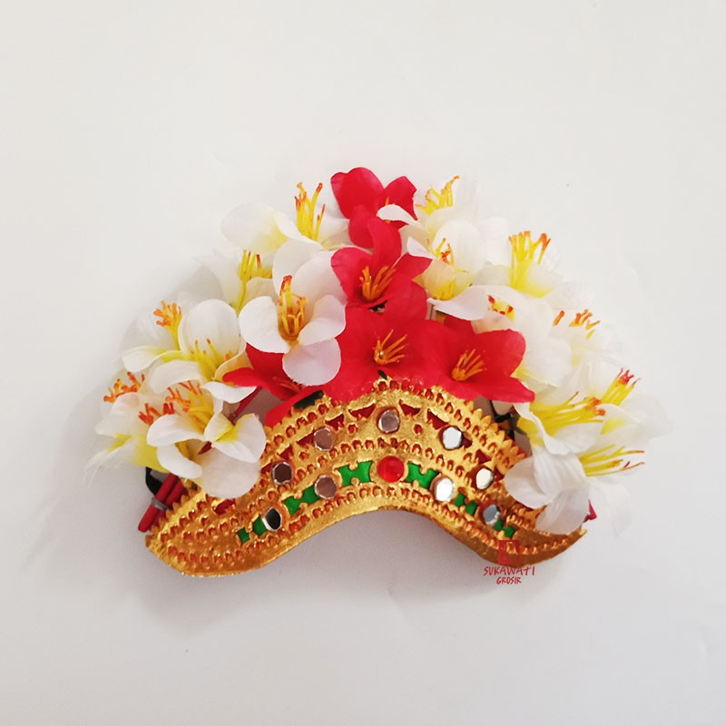
Melambangkan identitas budaya dan keindahan dalam penampilan penari, serta mencerminkan penghormatan terhadap tradisi dan nilai spiritual Bali.
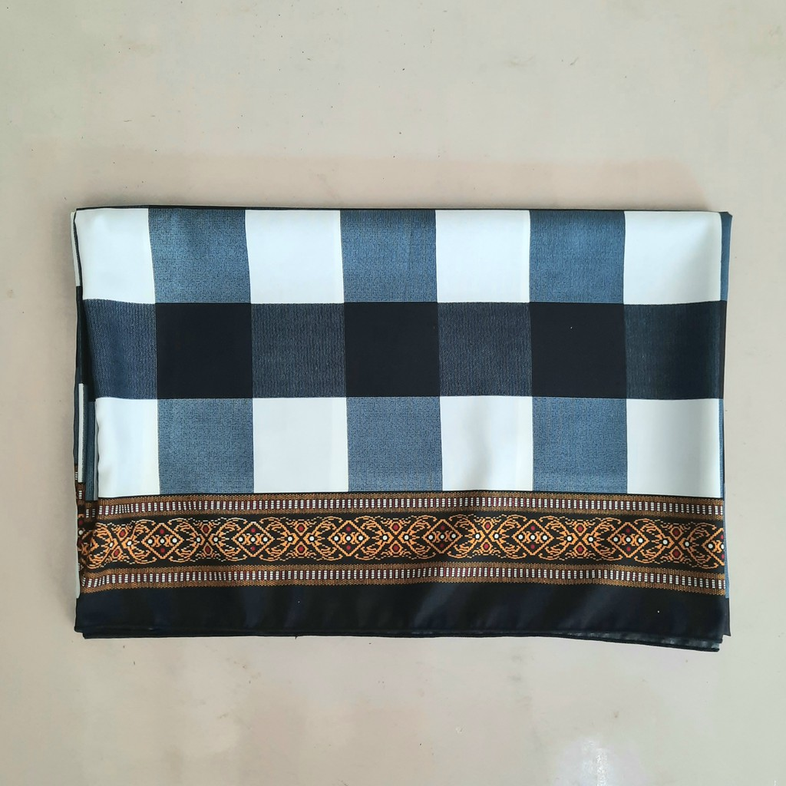
Melambangkan kesopanan dan penghormatan terhadap adat, sekaligus menunjukkan keterikatan masyarakat Bali dengan tradisi.
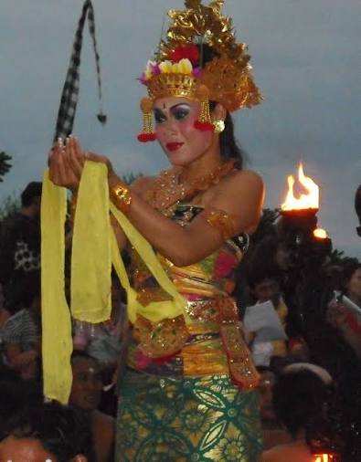
Melambangkan keanggunan dan kebersamaan, sekaligus memperkuat identitas budaya Bali.
Unique costumes, right? (๑ᵔ⤙ᵔ๑)
Costumes help bring each character of the Ramayana to life through clothing, accessories, and visual details.Objects
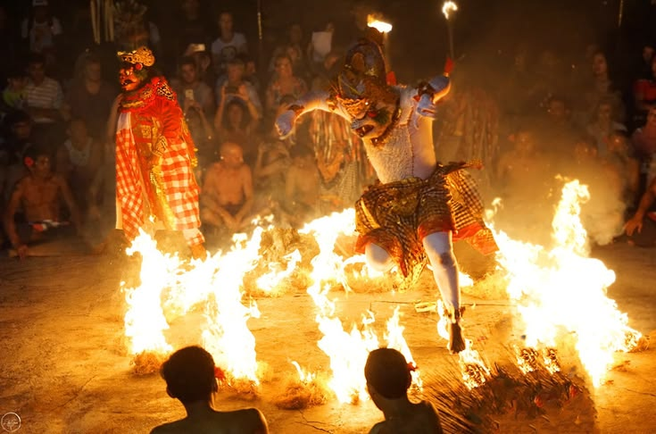
Api menjadi salah satu properti yang paling dikenal dalam pertunjukan Tari Kecak. Api terutama digunakan dalam adegan Hanoman ketika membakar Alengka.

Topeng digunakan untuk melambangkan karakter dan identitas tokoh dalam cerita Ramayana, sekaligus memperkuat unsur dramatik dalam pertunjukan.
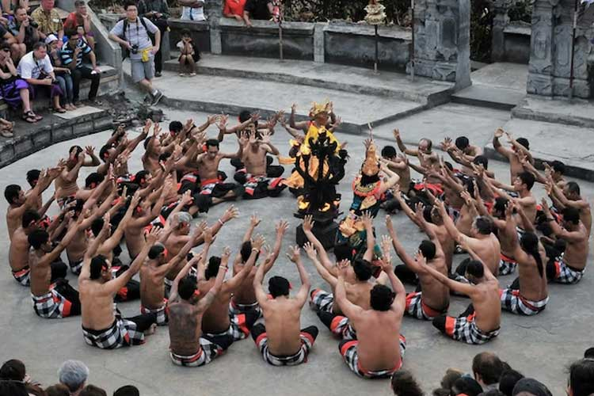
Dulang atau wadah sesaji melambangkan rasa syukur, penghormatan, dan persembahan kepada Tuhan serta mencerminkan nilai spiritual dalam budaya Bali.
Body Languange
Penari menggerakkan tangan secara bersama-sama mengikuti irama suara “cak”. Gerakan ini menciptakan kesan kompak dan dinamis.
Gerakan tubuh mengikuti perubahan ritme dan suasana cerita. Gerakan dapat menjadi lebih kuat ketika cerita memasuki bagian yang tegang.
Para penari duduk bersila membentuk lingkaran. Formasi ini menjadi salah satu ciri khas utama Tari Kecak.
Para tokoh menggunakan ekspresi wajah dan gerakan tubuh untuk menunjukkan karakter dan emosi dalam cerita.
The Characters Behind Tari Kecak
Name
Role
Main CharacterTokoh utama yang berusaha menyelamatkan Sita dari Rahwana.
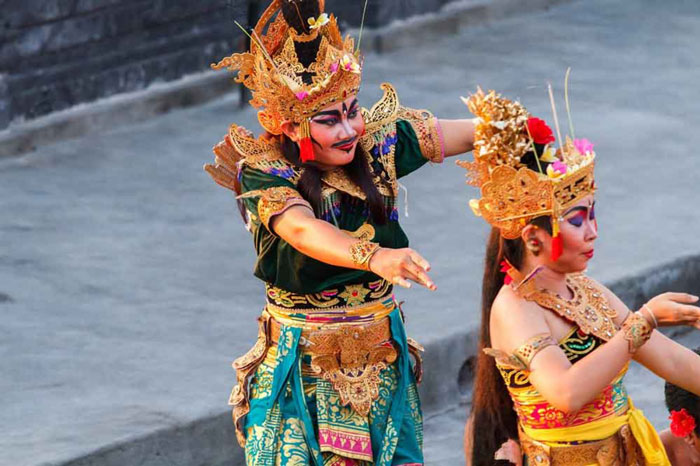
Name
Role
Rama's WifeIstri Rama yang diculik oleh Rahwana dan dibawa ke Alengka.
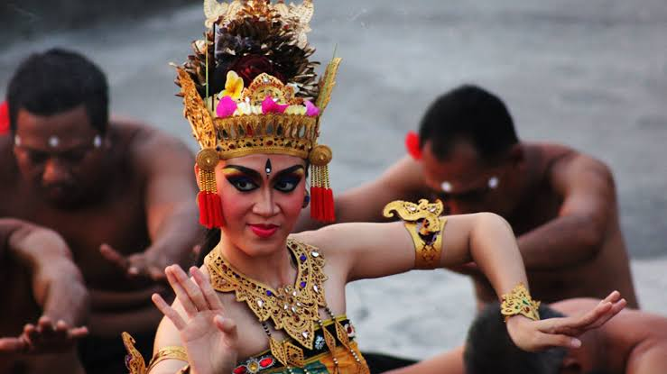
Name
Role
King of AlengkaRaja Alengka dan tokoh antagonis dalam cerita Ramayana.
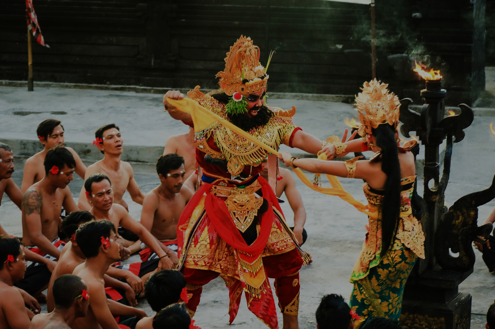
Name
Role
Wanara Character, Divine Monkey LordTokoh yang membantu Rama mencari dan menyelamatkan Sita.
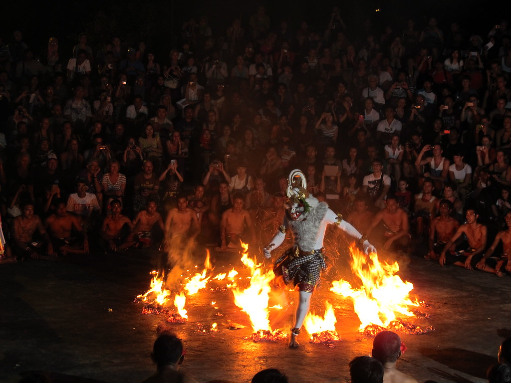
Name
Role
Rama's SiblingSaudara Rama yang mendampinginya dalam perjalanan.
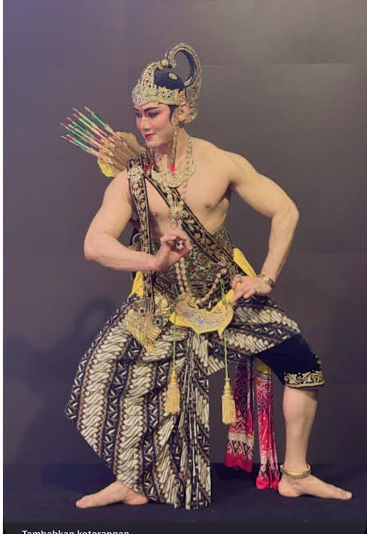
Name
Role
King of WanaraRaja kaum wanara yang membantu Rama dalam menghadapi Rahwana.
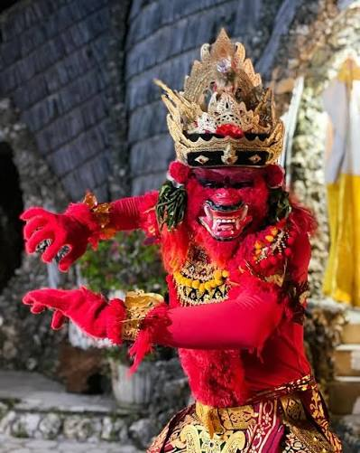
(˶ˆᗜˆ˵) Experience the Epic Tale in Real Life!